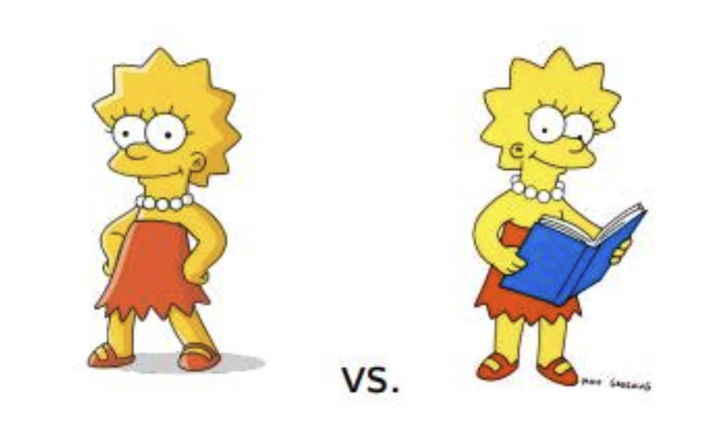

인과추론 입문하기
인과추론의 필요성과 어려움, Potential Outcome Framework를 통해 Causation을 추정하는 원리

오늘은 인과추론의 기초적인 내용들에 대해 이야기해보려고 합니다. 누군가는 이런 질문을 던질 수도 있습니다:
인과추론이 꼭 필요한가?
Yes, No로는 답할 수 없겠네요. “항상” 인과추론이 필요로되는 것만은 아니기 때문이죠. 그럼에도 불구하고, 이러한 유형의 질문은 항상 꼭 던져봐야합니다. 내가 하고 있는 비즈니스에 Data science를 도입하기 전에 가장 먼저 던져봐야 하는 질문은 “Data science가 꼭 필요한가?”인 것 처럼요. 우리는 실무에서 언제 “인과추론”의 필요성을 마주하게 될까요? 그리고,
Everthing is endogenous.
얽히고 섥혀서 서로 내생적(endogenous)으로 영향을 주고 받는 현실 세계에서 우리는 어떻게 인과적인 효과를 추정해볼 수 있을까요? 이러한 물음들에 답이 될만한 이야기들을 시작해보겠습니다.
인과추론의 필요성
“상관관계(correlation)는 인과관계(causation)가 아니다.”, 통계학을 공부하며 늘상 듣게되는 이야기입니다. 즉, \(X\)와 \(Y\)가 상관이 있다는 말이 \(X\)가 \(Y\)의 원인임을 의미하는 것은 아닙니다. 그럼에도 불구하고, 통계학에서 상관관계를 중심으로 이론 전개를 하는 이유는 이 또한 충분한 중요성이 있어서겠죠. 늘 그렇듯 데이터 분석의 목적, Research question에 따라 우리는 적절한 방법론을 취해주면 됩니다.
그렇다면, 상관관계만으로도 충분한 상황은 언제일까요? 바로 output(\(Y\))의 예측에 관심이 있을 때입니다. 상관관계는 예측에 매우 유용합니다. 심지어, 둘 간의 인과관계가 존재하지 않을때도요. 실제로 우리가 예측 모델링을 수행할 때 흔히들 correlation 정도는 살펴보지만, causation까지 파고들진 않습니다. 그렇다고해서, \(Y\)의 예측에 도움이 된다는 이유로 너무 쌩뚱맞은 변수를 모델에 반영하는 것은 좋은 예측 모델링이라 하긴 어렵겠죠. 반대로, 인과관계의 추정이 꼭 필요로 될 때가 있습니다. 앞서 이야기한 예측 문제를 풀 때가 아닌, output(\(Y\))의 개선, 향상을 위한 input(\(X\))의 intervention을 고안하는 것에 관심이 있을 때인데요. 예를 들자면 이런 것들이 있겠네요:
신약을 도입해야하는가 말아야하는가
마케팅 프로모션을 해야하는가 말아야하는가
정부 정책을 시행해야하는가 말아야하는가
사실 이러한 Output-oriented approach(예측 모델링), Input-oriented approach(인과추론)는 서로 완전히 배타적이진 않으며, 상호보완적으로 연결됩니다. 예컨데, 인과추론을 통해 얻게되는 원인변수를 prediction에 이용한다면 안정적으로 모델 성능을 향상시키고, 해석적으로도 훨씬 더 나은 모델을 가질 수 있게 되겠죠. 반대로, 어떤 변수가 output의 예측에 큰 도움이 되고 있다면 인과적 관계가 존재할 가능성이 높겠죠. 결국에 다시 돌아봐야할 것은 우리의 목적입니다. 우리가 어떤 context에서 이 문제를 풀기 시작했고, 구체적으로 풀어내야하는 것은 무엇인지에 대해서요.
인과추론의 어려움
Everthing is Endogenous
인과추론의 가장 중요한 대전제입니다. 우리가 관심있는 원인변수 외에도 영향을 미치는 수많은 교란요인(confounding variables)들이 서로 내생적으로 얽혀있기 때문에 인과적 효과를 발라내기란 매우 어렵습니다. 이를 인과추론에서는 endogeneity problem이라고 표현하는데요. 대부분의 인과추론 방법론들은 endogeneity problem을 극복하기 위해 설계되었다고 합니다. 결국, 이 부분의 극복을 위해서는 데이터가 어떻게 생성되었는지, 즉 DGP(Data Generation Process)에 대해 알아야하는데요. 아시다시피 현실 세계에서 생성되는 데이터의 모든 DGP를 파악하기란 불가능합니다. DGP를 모르는데, endogeneity를 어떻게 해결할 것인가? 이것이 인과추론이 어려운 근본적 이유죠.
인과추론에는 크게 2가지 접근법이 있습니다:
Potential Outcome Framework: Havard의 Donald Rubin 교수가 제안한 접근법으로, 잠재적 결과(potential outcome)을 이용해 인과관계를 추론하고자 함
Structural Causal Model: UCLA의 Judea Pearl 교수가 제안한 접근법으로, 변수들을 인과 그래프로 모델링하여 인과관계를 추론하고자 함
가장 쉬운 해결책은 Potentail Outcome Framework에 기반하여 DGP를 알 수 있는 연구 디자인을 수행하는 것입니다. 인과추론의 Gold Standard라 알려져있는 RCT(Randomized Controlled Trial) 또한 이러한 연구 디자인의 예 중 하나라고 할 수 있겠습니다. 본 글의 나머지 영역에서는 Potential Outcome Framework에 대한 기초적인 내용들에 대해 이야기해보려고 합니다.
Potential Outcome Framework 기초
Potential Outcome Framework는 Design based approach의 핵심이자, 전통적으로 가장 많이 활용되는 Causal model이라 할 수 있습니다. Potential Outcome Framework에서 인과추론이 가능한 원리에 대해 한 번 알아보죠. Potential Outcome Framework에서는 인과관계에 대해 잠재적 결과를 바탕으로 접근합니다. 여기서 “잠재적(potential)”의 의미는 실제로 발생하지 않은 일을 의미합니다. 즉, 특정 처리의 인과적 효과를 처리를 받았을 때의 실제 결과와, 만약 처리를 받지 않았으면 존재했을 잠재적 결과 간의 차이로 정의하고 분석해보자는 것이죠. 여기서, 우리는 처리를 받지 않았으면 있었을 잠재적 결과를 Counterfactual(반사실)이라고 부릅니다.
다만, Potential Outcome Framework를 이용하더라도 각 개인에 대한 처리 효과(ITE, individual treatment effect)는 구할 수 없습니다. 현실에서 Counterfactual 실제로 관찰하는 것은 불가능하기 때문입니다. 이를 우리는 Fundamental Problem of Causal Inference라 부릅니다. 하지만, 처리를 받은 그룹의 평균과 처리를 받지 않은 그룹(Control group, 이하 통제군)의 평균 차이를 통해 처리의 평균적인 인과 효과(Average treatment effect, 이하 ATE)는 구할 수 있습니다.
ATE를 추정하는 일, 즉 인과추론이 어려운 이유는 이상적인 존재인 Counterfactual과 통제군의 차이에서 기인할 것이고, 즉 이를 해결하기 위해서는 Counterfactual과 최대한 가까운 비교가능한(comparable) 통제군을 찾아서 비교하는 과정이 필요로 될 것입니다. 그리고, 이러한 비교가능한 통제군을 잘 구성하여 인과추론을 수행하려는 접근법이 바로 Potential Outcome Framework에 해당합니다.
앞서 이야기한 것들을 처음 접하는 분들이라면 이해가 어려울 수 있습니다. 이럴때는 오히려 수식을 통한 정의가 직관적인 이해에 도움이 될 수 있습니다.😀 먼저 잠재적 결과를 표기하는 notation에 대해 알아보죠.
\[ T_i = \begin{cases} 1 & \rm{If \ \ unit \ \ i \ \ received \ \ the \ \ treatment} \\0 & \rm{If \ \ unit \ \ i \ \ did \ \ not \ \ receive \ \ the \ \ treatment} \end{cases} \]
여기서 \(T_i\)는 실험대상(unit) \(i\)에 관한 처리 여부를 의미합니다. 참고로 종종 \(T\)를 \(D\)로 표현하는 경우도 있습니다. 그리고, 실험대상 \(i\)의 결과(outcome)는 \(Y_i\)로 표기할 것으로 합니다. 여기에 \(T_i\)를 아래첨자로 추가하면 잠재적 결과를 표현할 수 있습니다.
\(Y_{0i}\): 실험대상 \(i\)가 처리를 받지않았을 때의 잠재적 결과
\(Y_{1i}\): 실험대상 \(i\)가 처리를 받았을 때의 잠재적 결과
참고로, 잠재적 결과는 종종 \(Y_i(0)\), \(Y_i(1)\)로 표현하기도 합니다. 앞서 언급한 내용이지만, 잠재적 결과가 실제로 관측이 된 경우를 Factual(사실), 관측하지 못한 경우를 Counterfactual(반사실)이라 부릅니다. 앞서 배운 표기를 이용하여 ITE를 표현해보면 다음과 같습니다:
\[ {\rm{ITE}} = Y_{1i} - Y_{0i} \]
Counterfactual의 관측은 현실세계에서 어려우므로 앞서 말했듯 Potential Outcome Framework를 이용하더라도 ITE의 추정은 불가능합니다. 그러나, ATE의 추정은 가능하다고 했습니다.
\[ {\rm{ATE}} = E[Y_1 - Y_0] \]
여기서 \(E\)는 통계학에서 흔히 접할 수 있는 기댓값(expectation) 개념1입니다. 여기서 앞서 이야기하지 않았던 ATE보다 조금 더 추정이 쉬운 값인 처치군에 대한 평균처치효과(Average treatment effect on the treated, 이하 ATT)에 대해서도 정의를 해두겠습니다.
\[ {\rm{ATT}} = E[Y_1-Y_0 | T=1] \]
때때로 우리는 주어진 데이터, 가능한 연구 디자인에 따라 ATE가 아닌 ATT를 추정하는 것으로 만족해야할 수 있습니다. ATT를 ATE로 확장하기 위해서는 처리군과 통제군이 서로 완전히 비슷해서 서로 역할을 바꿔도(exchangeable) 결과가 동일했을 거라는 조금 더 추가적인 강한 가정이 있어야 합니다.
자, 그럼 기초적인 수식 정의는 끝이났습니다. 아무튼 현실세계에서는 ATE와 ATT의 추정도 어려울텐데, 비교가능한 통제군을 구성하는 것만으로도 어떻게 이것이 가능한 것일까요? 이 부분도 수식으로 한 번 적어보면 직관적인 이해에 큰 도움이 될 것입니다. 먼저, 우리가 현실세계에서 흔히 관측할 수 있는 효과는 Association(연관)입니다.
\[ {\rm{Association}} = E[Y|T=1] - E[Y|T=0] \]
여기서 Association은 두 변수 간의 매우 일반적인 관련성, 경향성을 나타내는 개념으로, 두 변수 간의 연결성을 보여주지만 원인과 결과를 관계를 보여주진 않습니다. 통계학에서 흔히 이야기하는 Correlation(상관)은 Association에 포함되는 더 구체적인 통계적 개념으로, 두 변수가 증가 또는 감소 추세를 보일 때를 의미한다고 생각하시면 될 것 같습니다. 아무튼, 이 Association 식을 조금 가지고 놀아보겠습니다.
\[ \begin{align} \rm{Association} & = E[Y|T=1] - E[Y|T=0] \\ & = E[Y_1|T=1] - E[Y_0|T=0] \\ & = E[Y_1|T=1] - E[Y_0|T=0] + E[Y_0|T=1] - E[Y_0|T=1] \\ & = \{ E[Y_1|T=1] - E[Y_0|T=1] \} + \{ E[Y_0|T=1] - E[Y_0|T=0] \} \\ & = \rm{ATT} + \rm{BIAS} \end{align} \]
마법이 일어났습니다. 즉, 우리는 Bias2를 통제해주면 현실에서도 ATT를 추정할 수 있게됩니다. 즉, 두 집단의 평균 차이가 곧 인과 효과(causal effect)가 된다는 말이죠. Bias란, Context에 따라 Selection Bias라고 표현되기도 하는데, 처치를 받지 않았을 때의 처치군과 통제군의 차이입니다. 즉, 처리 전에는 둘 간의 차이가 없어야 한다는 것이며, 앞서 수식 정의 전 단계에서 설명했듯 비교가능한 통제군을 구성해야한다는 의미가 바로 여기에 있는 것이죠. 즉, 비교가능한 통제군이란 다음의 등식이 성립하는 상황을 이야기합니다.
\[ E[Y_0|T=1] = E[Y_0|T=0] \]
참고로 이러한 Bias가 발생하는 근본적인 원인은 앞서 인과추론의 어려움에 대해 설명할 때 잠깐 등장했던 교란변수의 존재때문입니다. Bias가 발생할 수 밖에 없는 상황을 2가지를 예시로 들어보겠습니다.
Bias가 발생하는 예: 학습에 태블릿을 사용하는 것이 학업 성취도에 증가에 영향을 미치는가?
- 별다른 연구 디자인 없이, 단순하게 수업 간에 태블릿을 지급하는 학교의 학업 성취도와 태블릿을 지급하지 않는 학교의 학업 성취도를 비교할 경우 Bias가 발생하여 태블릿이 학업 성취도에 미치는 인과적 효과를 추정하기 어렵습니다. 여기서 Bias를 발생시킬 수 있는 교란변수의 예는 교사의 질, 학교 수업료, 위치 등이 될 수 있습니다. 태블릿을 무상으로 지급하는 학교의 경우 애초에 학비가 더 비싸고 부유한 집의 자녀들이 다닐 것이기 때문에 애초에 \(E[Y_0|T=1]\)과 \(E[Y_0|T=0]\)이 비교가능하지 않을 것입니다.
Selection Bias가 발생하는 예: 반려동물을 키우는 것이 우울증 감소에 영향을 미치는가?
- 반려동물을 키우는 것은 개인의 자발적 선택이므로 Selection Bias라고 표현을 했습니다.3 그런데, 자발적 선택이 우울증과 관련이 있을수도 있습니다. 가령, 우울감이 심할수록 반려동물을 키우는 경향이 클 수 있죠. 그러면, 반려동물을 키우는 처리군과 키우지 않는 통제군은 반려동물을 키운다는 사실(처치)을 제외하고도 그룹 간 특성(우울증의 정도)이 다를 수 있습니다. 이 경우도 마찬가지로 애초에 \(E[Y_0|T=1]\)과 \(E[Y_0|T=0]\)이 비교가능하지 않은 경우이므로, 반려동물이 우울증에 영향을 미치는 인과적 효과를 추정하기란 어려울 것입니다.
위 두 예시가 Bias의 이해에 도움이 되었기를 바랍니다. 아직 우리는 Association으로 ATT를 추정할 수 있는 바만 확인했으므로, 다시 수식으로 돌아가보죠. ATE로는 어떻게 확장이 가능할까요?Bias는 0이라고 가정하고 Association 식을 다시 써보겠습니다:
\[ \begin{align} {\rm{Association}} & = E[Y|T=1]-E[Y|T=0] \\ & = ATT \\ & = E[Y_1-Y_0|T=1] \end{align} \]
앞서 살짝 언급했듯 ATE로의 확장은 exchangeability가 성립할 때 가능하다고 했습니다. 즉, ATE로의 확장을 위해서는 처치 전 교환가능(exchangeble):
\[ E[Y_0|T=1] = E[Y_0|T=0] \]
뿐만이 아닌, 처치 후 교환가능까지 성립을 해야합니다. 이 개념은 수식으로 다음과 같이 표현할 수 있습니다:
\[ E[Y_1 - Y_0 | T=1] = E[Y_1 - Y_0 | T=0] \]
위 식이 성립하면 다시 한 번 마법이 일어납니다.
\[ \begin{align} {\rm{Association}} & = E[Y|T=1]-E[Y|T=0] \\ & = ATT \\ & = E[Y_1-Y_0|T=1] \\& = E[Y_1-Y_0 | T=0] \\ & = E[Y_1-Y_0] \\ & = {\rm{ATE}} \end{align} \]
앞서 수식을 통해 확인해본 바들을 정리해보겠습니다:
Potential Outcome Framework를 통해 Bias를 통제하여 비교가능한 통제군을 구성하면 Association으로 Causation ATT를 추정할 수 있다.
여기서 더 나아가, Causation을 전체 샘플에 확장하기 위해 ATE를 구하고자 한다면, 처리군과 통제군이 서로 완전히 비슷해서 서로 역할을 바꿔도 결과가 동일했을거라는 더 강한 추가적인 가정이 있어야 한다.
마지막으로 드리고 싶은 말씀은 실험 디자인, 관측 가능한 데이터, Context에 따라 ATT의 추정까지만 가능한(또는 필요한) 경우도 있으며, 인과추론 자체가 불가능한 상황이 존재할 수도 있다는 것입니다.
맺음말
오늘은 인과추론의 필요성과 어려움, Potential Outcome을 통해 Causation을 추정하는 원리에 대해 이야기해보았습니다. 지난 3월에는 Potential Outcome Framework 관점의 인과추론 방법론 중 하나인 준실험설계(Quasi experimental design)에 대해서 이야기해보기도 했는데요. 이 글을 통해 인과추론을 처음 접하신 분들이라면, 어쩌면 조금 더 인과추론의 흥미를 돋궈줄 수도 있을지도 모르겠다는 생각이 들어 3월에 작성했던 글을 공유드려봅니다.
▶️ 글 보러가기
인과추론은 원인과 결과를 분석하는 것이긴 하나, 더 본질적인 것은 인과추론은 Data science를 구성하는 또 하나의 분석 도구라는 것입니다. 주어진 Context에서 본인이 관심있는 부분 또는 해결해야하는 문제에 있어서 필요로 되는 부분이 Input에 관한 Intervention을 고안하는 일인지, Output에 관한 예측에 관한 일인지에 따라 인과추론의 필요 유무가 결정될 것입니다. 어떤 일을 시작하기 전에 항상 스스로에게 질문을 던져봅시다. 이 문제를 해결하기 위해 “OOO이 필요한가?” 라고 말이죠.
References
Footnotes
Reuse
Citation
@online{2023,
author = {, 방태모},
title = {인과추론 입문하기},
date = {2023-05-29},
url = {https://taemobang.com/posts/2023-05-29-introduction-to-causal-inference/},
langid = {kr}
}